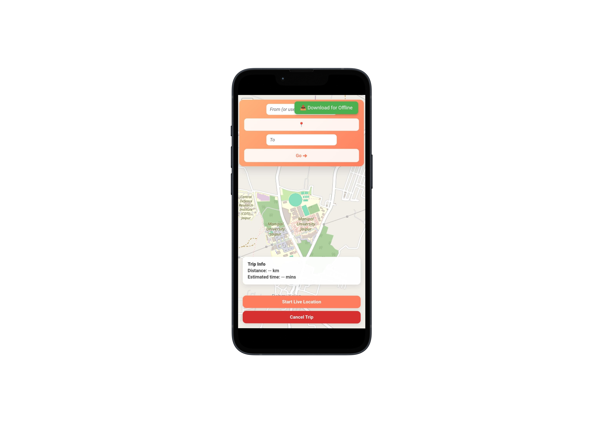
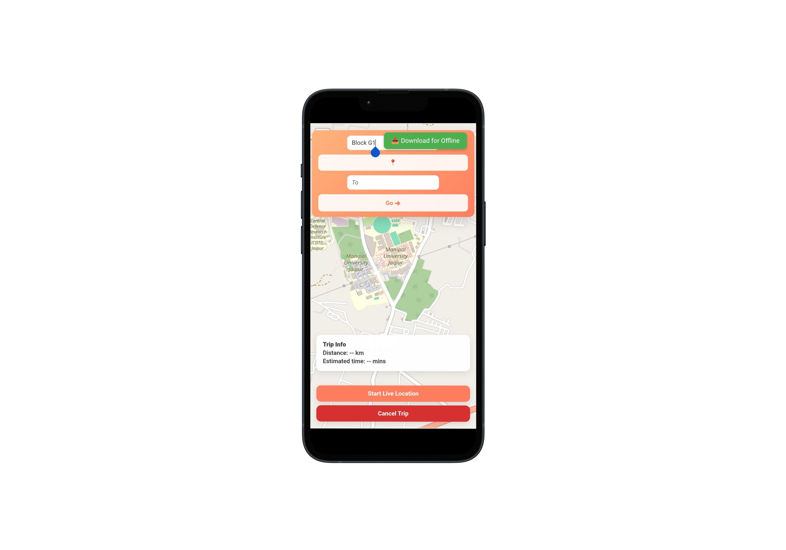
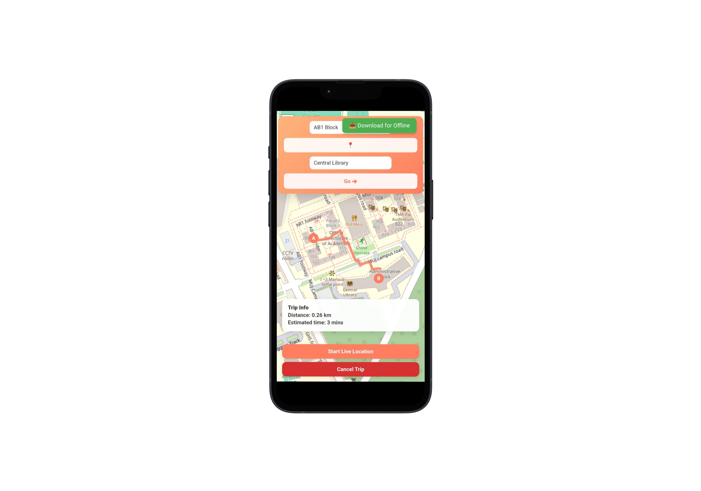
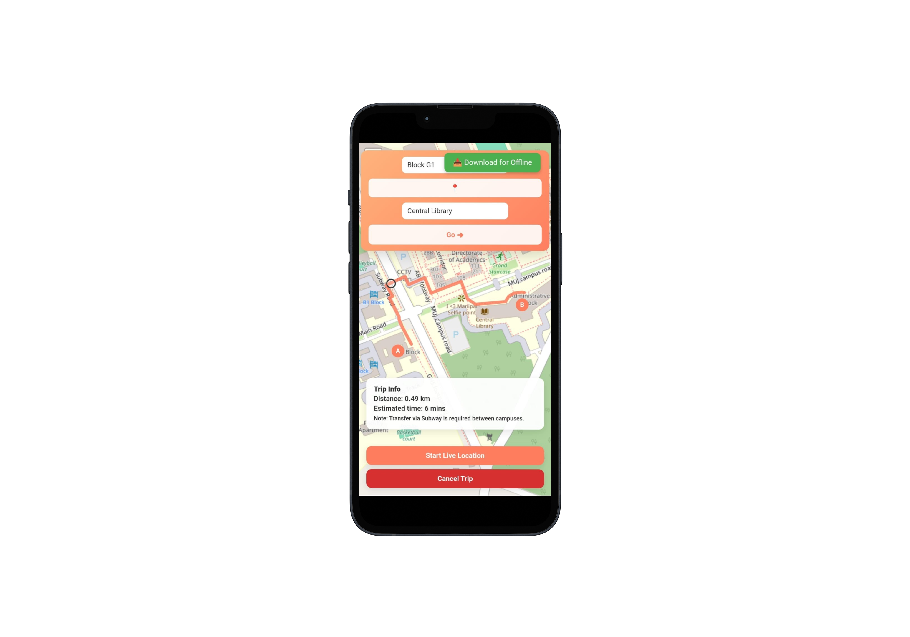

Navigate the
Campus Faster.
|
System Architecture
Finding your way around a large university campus can be confusing. Manipal UniNav is built with a simple functional vision: to help everyone on campus find their way without hassle through a light, fast, and scalable tool.
The core navigation experience uses maps sourced from OpenStreetMap. For real-time routing and pathfinding mechanics, we integrated the OpenRouteService (ORS) API, which provides highly accurate walking directions.
Zonal Mapping
-
✦
The College Campus Housing academic blocks, libraries, labs, and administrative buildings.
-
✦
The Hostel Campus Including student housing, mess areas, and recreational spots.
0
Students Helped
0
Buildings Covered
0
Guides Available

How It Works

Access Portal
Open the navigator in your browser to load the interactive campus map.

Search Location
Type the name of a building, block, or facility in the top search bar.

Generate Route
Select your destination and click 'Directions' to calculate the optimal path.

Navigate
Follow the highlighted polyline on the map to reach your exact destination.
Engineering & Design

Bhargavi Chaudhary
UI/UX Designer

Anmol Srivastava
Lead Developer

Tavishi Singh
Content & Maps